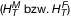

- 1.
Berechnung der Organ-Äquivalentdosis HT:
Die durch die Strahlung R erzeugte Organ-Äquivalentdosis HT,R ist das Produkt aus der über das Gewebe oder Organ T gemittelten Energiedosis, der Organ-Energiedosis DT,R, die durch die Strahlung R erzeugt wird, und dem Strahlungs-Wichtungsfaktor wR nach Teil C Nummer 1:
Bei Vorliegen mehrerer Strahlungsarten oder -energien mit unterschiedlichen Werten von wR werden die einzelnen Beiträge addiert. Für die gesamte Organ-Äquivalentdosis HT gilt dann:
Organ-Äquivalentdosiswerte werden für eine idealisierte Person (Referenzperson) errechnet und sind separat für die männliche und die weibliche Referenzperson  auf Grund deren unterschiedlicher Merkmale zu ermitteln.
Zur Berechnung der lokalen Hautdosis wird die gemittelte Energiedosis der Haut in 0,07 Millimeter Gewebetiefe herangezogen.
Bei einer inneren Exposition berücksichtigt die Organ-Äquivalentdosis auch die nach dem Bezugszeitpunkt auftretende Exposition auf Grund des Verbleibs der Radionuklide im Körper (Folge-Organ-Äquivalentdosis).
Die Folge-Organ-Äquivalentdosis HT(τ) ist das Zeitintegral der Organ-Äquivalentdosisleistung im Gewebe oder Organ T, die eine Person infolge einer Inkorporation radioaktiver Stoffe zum Zeitpunkt t0 erhält:
ḢT(t) bezeichnet die mittlere Organ-Äquivalentdosisleistung im Gewebe oder Organ T zum Zeitpunkt t.
Hierbei bezeichnet τ den Zeitraum, über den die Integration erfolgt. Für Erwachsene ist ein Zeitraum von 50 Jahren und für Kinder der Zeitraum vom jeweiligen Alter bis zum Alter von 70 Jahren zugrunde zu legen, sofern kein anderer Wert angegeben wird.
- 2.
Berechnung der effektiven Dosis E:
Die effektive Dosis nach § 5 Absatz 11 des Strahlenschutzgesetzes ist das zur Berücksichtigung der Strahlenwirkung auf verschiedene Organe oder Gewebe gewichtete Mittel von Organ-Äquivalentdosen; die Strahlenempfindlichkeiten der verschiedenen Organe oder Gewebe werden durch die Wichtungsfaktoren wT nach Teil C Nummer 2 berücksichtigt. Dabei ist über alle in Teil C Nummer 2 aufgeführten Organe und Gewebe zu summieren und über die Organ-Äquivalentdosiswerte für die männliche und weibliche Referenzperson zu mitteln:
Bei einer inneren Exposition berücksichtigt die effektive Dosis auch die nach dem Bezugszeitpunkt auftretende Exposition auf Grund des Verbleibs der Radionuklide im Körper (effektive Folgedosis).
Die effektive Folgedosis E(τ) ist die Summe der Folge-Organ-Äquivalentdosen HT(τ) nach Nummer 1, jeweils multipliziert mit dem zugehörigen Gewebe-Wichtungsfaktor wT nach Teil C Nummer 2. Dabei ist über alle in Teil C Nummer 2 aufgeführten Organe und Gewebe zu summieren:
Hierbei bezeichnet τ den Zeitraum, über den die Integration erfolgt. Für Erwachsene ist ein Zeitraum von 50 Jahren und für Kinder der Zeitraum vom jeweiligen Alter bis zum Alter von 70 Jahren zugrunde zu legen, sofern kein anderer Wert angegeben wird.
Bei der Berechnung der effektiven Dosis ist die Energiedosis der Haut in 0,07 Millimeter Gewebetiefe über die ganze Haut zu mitteln.
- 3.
Berechnung der effektiven Dosis durch Inhalation von Radon an Arbeitsplätzen in Innenräumen:
Es ist davon auszugehen, dass eine effektive Dosis von 1 Millisievert verursacht wird durch
- a)
eine Radon-222-Exposition von 0,32 Megabecquerel je Kubikmeter mal Stunde; dabei wird ein Wert des Gleichgewichtsfaktors zwischen Radon-222 und seinen kurzlebigen Zerfallsprodukten von 0,4 zugrunde gelegt, oder
- b)
eine potenzielle Alphaenergie-Exposition von 0,71 Millijoule durch Kubikmeter mal Stunde.
Die zuständige Behörde kann auf Grund der Expositionsbedingungen von Satz 1 Buchstabe a abweichende Umrechnungsfaktoren festlegen.
- 4.
Berechnung der effektiven Dosis bei Inkorporation, Submersion oder Bodenkontamination: Für die Berechnung der Exposition sind jeweils die Dosiskoeffizienten und Vorgaben aus den Zusammenstellungen im Bundesanzeiger Nummer 160 a und b vom 28. August 2001 Teil I und Teil II sowie im Bundesanzeiger vom 10. Mai 2023 (Bekanntmachung des Bundesamtes für Strahlenschutz vom 17. April 2023, BAnz AT 10. Mai 2023 B7) heranzuziehen. Für die Ermittlung der Exposition für Einzelpersonen der Bevölkerung sind die Dosiskoeffizienten und Vorgaben aus der Zusammenstellung im Bundesanzeiger Nummer 160 a und b vom 28. August 2001 Teil I und Teil II heranzuziehen. Für Personen, die einer beruflichen Exposition ausgesetzt sind, oder für beruflich tätige Personen sind die Dosiskoeffizienten und Vorgaben aus den Zusammenstellungen im Bundesanzeiger Nummer 160 a und b vom 28. August 2001 Teil I und im Bundesanzeiger vom 10. Mai 2023 (Bekanntmachung des Bundesamtes für Strahlenschutz vom 17. April 2023, BAnz AT 10. Mai 2023 B7) heranzuziehen. Die zuständige Behörde kann unter Berücksichtigung der Expositionsbedingungen andere Dosiskoeffizienten und Vorgaben nach dem Stand von Wissenschaft und Technik festlegen.
- 5.
Berechnung der effektiven Dosis des ungeborenen Kindes:
- a)
Berechnung des Beitrags für das ungeborene Kind bei äußerer Exposition der schwangeren Person: Für die Berechnung der Exposition sind jeweils die Dosisleistungskoeffizienten und Vorgaben aus der Zusammenstellung im Bundesanzeiger (Bekanntmachung des Bundesamtes für Strahlenschutz vom 17. April 2023, BAnz AT 10. Mai 2023 B6) heranzuziehen. Die zuständige Behörde kann unter Berücksichtigung der Expositionsbedingungen andere Dosisleistungskoeffizienten und Vorgaben nach dem Stand von Wissenschaft und Technik festlegen.
- b)
Berechnung des Beitrags für das ungeborene Kind aus einer inneren Exposition des ungeborenen Kindes auf Grund der Inkorporation von Radionukliden einer schwangeren Person: Für die Berechnung der Exposition sind jeweils die Dosiskoeffizienten und Vorgaben aus der Zusammenstellung im Bundesanzeiger (Bekanntmachung des Bundesamtes für Strahlenschutz vom 27. Juni 2022, BAnz AT 4. Juli 2022 B13) heranzuziehen. Die zuständige Behörde kann unter Berücksichtigung der Expositionsbedingungen andere Dosiskoeffizienten und Vorgaben nach dem Stand von Wissenschaft und Technik festlegen.